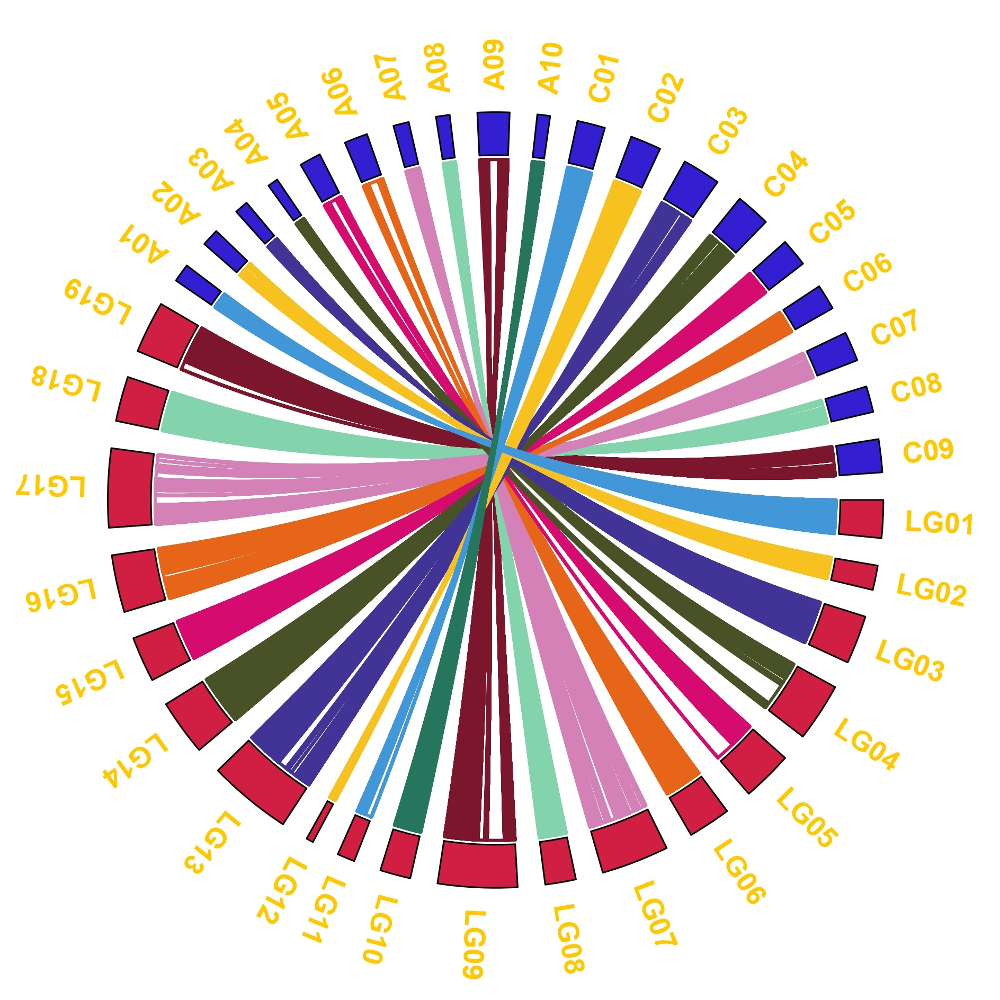

前言
植物的分子遗传研究的重要优势在于遗传群体的易得性。通过设计杂交混合不同来源亲本的基因组，自交获得一系列基因型和表型存在分离的作图群体。 双亲群体经历的连续世代较少，连锁不平衡衰减较大，即重组事件少，重组片段大。重测序会产生全基因组接近饱和的变异，但二代测序易产生错误，导致错误分型，且相邻的SNP紧密连锁，不适用于关联分析和连锁分析。BIN是染色体上连续的不发生的片段，校正了错误分型，降低了计算消耗，是双亲群体重测序的常用手段。
数据准备
founder多态性变异筛选
- 初过滤标准为PASS，二等位，无缺失，次等位频率为50%，测序深度为平均测序深度的一半至两倍
vcftools --vcf pop.snp.filt.vcf.gz
--remove-filtered-all
--max-alleles 2
--min-alleles 2
--max-missing 1
--maf 0.4
--max-maf 0.6
--indv founderA
--indv founderB
--max-meanDP 120
--min-meanDP 30
--recode
--out founder- 多态性变异筛选，去除存在杂合的变异
grep -v "0/1" founder.recode.vcf|awk '{print$1"\t"$2}'|grep -v "#" > founder.pos- SNPable筛选高质量位点
apply_mask_l mask_35_50.fa founder.pos > foundermask.posoffspring高质量变异鉴定
- 初过滤标准为缺失率，maf和founder高质量位点
vcftools
--gzvcf pop.snp.filt.vcf.gz
--max-missing 0.8
--maf 0.05
--positions foundermask.pos
--recode
--out offspring_poly- 分割染色体
vcftools
--vcf offspring_poly.recode.vcf
--chr Chr1
--recode
--out Chr1BIN型重建
- vcf转换为SNPbinner输入文件
suppressMessages(library(vcfR))
suppressMessages(library(tidyverse))
suppressMessages(library(optparse))
option_list <- list(
make_option(c("-i", "--input"), type = "character", default = FALSE,
action = "store", help = "This is input vcf!"),
make_option(c("-o", "--out"), type = "character", default = FALSE,
action = "store", help = "This is output file!"),
make_option(c("-a", "--founderA"), type = "character", default = FALSE,
action = "store", help = "This is founder A!"),
make_option(c("-b", "--founderB"), type = "character", default = FALSE,
action = "store", help = "This is founder B!")
)
opt = parse_args(OptionParser(option_list = option_list, usage = "This Script is for trans vcf to tsv!"))
vcf <- read.vcfR(opt$input)
geno <- vcf %>%
extract.gt() %>%
as_tibble(rownames = NA) %>%
rownames_to_column(var = "markername") %>%
mutate(across(.cols = -markername,
~ str_replace_all(., pattern = "\\|", replacement = "\\/"))) %>%
rename(founderA = !!sym(opt$founderA),
founderB = !!sym(opt$founderB)) %>%
mutate(across(.cols = -markername,
~ dplyr::case_when(
. == founderA ~ "a",
. == founderB ~ "b",
. == "0/1" ~ "h",
TRUE ~ "-"
))) %>%
mutate(chrom = sapply(str_split(markername, "_"), `[`, 1) %>% str_replace(pattern = "scaffold", replacement = ""),
position = sapply(str_split(markername, "_"), `[`, 2)) %>%
select(markername, chrom, position, founderA, founderB, everything())
write_tsv(geno, file = opt$out)Rscript vcf2tsv.r -i Chr1.recode.vcf -a founderA -b founderB -o Chr1.tsv- snp to bin
singularity exec -e ~/Singularity_lib/python2.sif python2.7
~/software/SNPbinner/snpbinner crosspoints
-i Chr1.tsv
-o Chr1-crosspoints
-r 0.02
-l 38004428
singularity exec -e ~/Singularity_lib/python2.sif python2.7
~/software/SNPbinner/snpbinner bins
-i Chr1-crosspoints
-o Chr1-bin
-l 5000- bin型合并
library(tidyverse)
file <- fs::dir_ls(path = "../../project/Bipgenetic/Rape/Data/bin/")
tmp <- map_dfr(.x = file,
.f = ~ read.csv(., header = FALSE) %>%
pivot_longer(cols = -V1) %>%
pivot_wider(names_from = V1,
values_from = value) %>%
select(-name),
.id = "Chrtmp") %>%
mutate(chrom = str_sub(Chrtmp, start = -10, end = -5),
markername = str_c(chrom, bin_start, sep = "_")) %>%
select(markername, chrom, everything(), -Chrtmp)遗传作图
全基因组BIN图
单家系全基因组BIN图
suppressWarnings(suppressMessages(library(tidyverse)))
suppressWarnings(suppressMessages(library(qtl)))
suppressWarnings(suppressMessages(library(data.table)))
suppressWarnings(suppressMessages(library(ggprism)))
path <- "C:/Users/wpf/Desktop/project/Bipgenetic/"
geno <- readxl::read_excel(path = str_c(path, "Rape/Output/geno.xlsx")) %>%
as_tibble() %>%
mutate(across(.cols = -c(markername, chrom, starts_with("bin")),
~ case_when(
. == 0 ~ "AA",
. == 2 ~ "BB",
. == 1 ~ "AB"
)))
prefix <- geno %>%
select(markername, chrom, starts_with("bin"))
tmp <- geno %>%
select(-c(markername, chrom, starts_with("bin")))
tmp <- names(geno)[-c(1:5)] %>%
map_dfc( ~ geno %>%
select(all_of(.x)) %>%
separate(col = .x,
into = str_c(.x, c("_HapA", "_HapB")),
sep = 1)) %>%
bind_cols(prefix) %>%
pivot_longer(cols = -c(markername, chrom, starts_with("bin")),
names_to = c("taxa", "Hap"),
names_sep = "_",
values_to = "geno")
genome <- tmp %>%
group_by(chrom, Hap) %>%
summarise(len = max(bin_end)) %>%
ungroup() %>%
mutate(chr = sort(rep(seq(1, 19), 2)))## `summarise()` has grouped output by 'chrom'. You can override using the
## `.groups` argument.tmp %>%
left_join(genome, by = c("chrom", "Hap")) %>%
filter(taxa %in% c(0, 1)) %>% #作图示例
group_nest(taxa) %>%
mutate(plot = map(data, ~ ggplot() +
geom_bar(data = genome,
mapping = aes(x = chr, y = len/1e6, group = Hap),
colour = "white",
stat = "identity",
fill = "white",
width = 0.4,
position = position_dodge2(width = 0.5)) +
scale_x_discrete(limits = unique(genome$chrom),
position = "top") +
scale_y_continuous(breaks = seq(0, 80, 10),
trans = "reverse",
expand = expansion(mult = c(0.05, 0))) +
theme_bw() +
theme(legend.position = c(0.8, 0.2),
plot.background = element_blank() ,
panel.grid.major = element_blank(),
panel.grid.minor = element_blank() ,
panel.border = element_blank(),
axis.ticks.x = element_blank(),
axis.line.y = element_line()) +
xlab(NULL) + ylab("Loction (Mb)") +
geom_rect(data = .x,
mapping = aes(xmin = chr - 0.23,
xmax = chr + 0.23,
ymin = bin_start/1e6,
ymax = bin_end/1e6,
fill = geno,
group = Hap),
position = position_dodge(width = 0.6)) +
scale_fill_manual(values = c("#4197d8", "#f8c120"),
name = "Genotype"))) %>%
walk2(.x = .$taxa,
.y = .$plot,
.f = ~ print(.y))
 #### 群体全基因组BIN图
#### 群体全基因组BIN图
geno <- readxl::read_excel(path = str_c(path, "Rape/Output/geno.xlsx")) %>%
select(-markername, -bin_center, -B409, -`375`) %>%
pivot_longer(cols = -c(chrom, starts_with("bin")),
names_to = "taxa",
values_to = "geno") %>%
mutate(ind = as.numeric(taxa),
indd = ind + 1)
bin <- geno %>%
group_by(chrom) %>%
summarise(pos = max(bin_end)) %>%
mutate(poscum = cumsum(lag(pos, default = 0)),
add = 4e6,
addcum = cumsum(lag(add, default = 0)),
cum = poscum + addcum) %>%
select(chrom, cum)
tmp <- geno %>%
left_join(bin, by = "chrom") %>%
mutate(start = bin_start + cum,
end = bin_end + cum)
axis <- tmp %>%
group_by(chrom) %>%
summarise(center = mean(end))
ggplot(data = tmp) +
geom_rect(mapping = aes(xmin = ind,
xmax = indd,
ymin = start/1e6,
ymax = end/1e6,
fill = geno)) +
scale_y_continuous(breaks = axis$center/1e6, labels = axis$chrom) +
scale_x_continuous(expand = expansion(mult = c(-0.05, 0))) +
scale_fill_manual(values = c("#4197d8","grey60","#f8c120")) +
theme_bw() +
theme(legend.position = "none",
panel.grid.major = element_blank(),
panel.grid.minor = element_blank(),
panel.border = element_blank(),
axis.ticks = element_blank(),
axis.text.x = element_blank()) +
xlab(NULL) + ylab(NULL) ### 遗传连锁图
利用QTL IciMapping软件计算遗传距离，构建遗传连锁图谱。
### 遗传连锁图
利用QTL IciMapping软件计算遗传距离，构建遗传连锁图谱。
- 遗传连锁图
map <- readxl::read_excel(path = str_c(path, "Rape/Output/map.xlsx")) %>%
mutate(chrom = sapply(str_split(markername, "_"), `[`, 1)) %>%
select(markername, chrom, pos) %>%
column_to_rownames(var = "markername") %>%
table2map()
plot.map(map) + 共线性点图
+ 共线性点图
tmp <- map2table(map) %>%
rownames_to_column(var = "markername") %>%
mutate(position = sapply(str_split(markername, "_"), `[`, 2))
genetic <- tmp %>%
group_by(chr) %>%
summarise(gpos = max(pos)) %>%
mutate(gposcum = cumsum(lag(gpos, default = 0))) %>%
select(chr, gposcum)
physic <- tmp %>%
group_by(chr) %>%
summarise(ppos = max(as.numeric(position))) %>%
mutate(pposcum = cumsum(lag(ppos, default = 0))) %>%
select(chr, pposcum)
tmp2 <- tmp %>%
left_join(genetic, by = "chr") %>%
left_join(physic, by = "chr") %>%
mutate(ppos = as.numeric(position) + pposcum,
gpos = pos + gposcum)
axis <- tmp2 %>%
group_by(chr) %>%
summarise(xcenter = mean(gpos),
ycenter = mean(ppos)/1e6)
ggplot(data = tmp2, aes(x = gpos, y = ppos/1e6, colour = chr)) +
geom_point() +
scale_x_continuous(breaks = axis$xcenter, labels = axis$chr) +
scale_y_continuous(breaks = axis$ycenter, labels = axis$chr) +
theme_prism() +
scale_color_manual(values = rep(c("#4197d8", "#f8c120", "#413496", "#495226", "#d60b6f", "#e66519", "#d581b7", "#83d3ad", "#7c162c", "#26755d"), 12)) +
theme(legend.position = "none",
axis.ticks = element_blank(),
axis.text.x = element_text(angle = 45, vjust = 0.6)) +
xlab("linkage Group") + ylab("Genome") + 共线性圈图
使用Tbtools,利用R处理出输入文件
+ 共线性圈图
使用Tbtools,利用R处理出输入文件
map <- readxl::read_excel(path = str_c(path, "Rape/Output/map.xlsx")) %>%
mutate(chrom = sapply(str_split(markername, "_"), `[`, 1)) %>%
select(markername, chrom, pos)
genetic <- map %>%
group_by(chrom) %>%
summarise(len = max(pos) * 1e6) %>%
mutate(chrom = str_c("LG", str_pad(row_number(), width = 2, pad = 0)),
rgb = "210,31,67") %>%
select(chrom, len ,rgb)
physic <- map %>%
mutate(pos = sapply(str_split(markername, "_"), `[`, 2) %>% as.numeric()) %>%
group_by(chrom) %>%
summarise(len = max(pos),
rgb = "51,31,209")
genetic %>%
bind_rows(physic) %>%
write_tsv(., file = str_c(path, "Rape/Output/Chrlen.tsv"), col_names = FALSE)
bin <- readxl::read_excel(path = str_c(path,"Rape/Output/geno.xlsx")) %>%
select(markername, chrom, starts_with("bin"))
gmap <- readxl::read_excel(path = str_c(path, "Rape/Output/map.xlsx")) %>%
group_by(chr) %>%
mutate(chrom = str_c("LG", str_pad(chr, width = 2, pad = 0)),
start = lag(pos, default = 0) * 1e6,
end = pos * 1e6)
color <- tibble(
chrom.y = genetic$chrom,
rgb = c("65,151,216", "248,193,32", "65,52,150", "73,82,38", "214,11,111", "230,101,25", "213,129,183", "131,211,173", "124,22,44", "38,117,93",
"65,151,216", "248,193,32", "65,52,150", "73,82,38", "214,11,111", "230,101,25", "213,129,183", "131,211,173", "124,22,44")
)
res <- bin %>%
left_join(gmap, by = "markername") %>%
select(-markername, -bin_center, -pos, -chr) %>%
mutate(across(.cols = - starts_with("chr"),
~ round(.))) %>%
left_join(color, by = "chrom.y")
write_tsv(res, file = str_c(path, "rape/Output/synteny.tsv"), col_names = FALSE) ### QTL作图 利用QTL IciMapping软件的ICIM模型进行遗传作图
path <- "C:/Users/wpf/Desktop/project/WinQTLMAP/ICIM/Rape/BIP/RapeRIL/Results/RapeRIL.ric"
tmp <- fread(path) %>%
mutate(chrom = sapply(str_split(LeftMarker, "_"), `[`, 1)) %>%
select(TraitName, Chromosome, Position, LOD, chrom) %>%
group_by(TraitName) %>%
mutate(pos = row_number())
axis <- tmp %>%
group_by(chrom) %>%
summarise(center = mean(pos))
tmp %>%
ungroup() %>%
filter(str_starts(TraitName, "EaC")) %>%
group_nest(TraitName) %>%
mutate(plot = map(data, ~ ggplot() +
geom_line(data = .x,
mapping = aes(x = pos,
y = LOD,
colour = as.factor(Chromosome))) +
geom_hline(yintercept = 2.5,
color = "red",
linetype = "dashed",
alpha = 0.5) +
scale_x_continuous(labels = axis$chrom,
breaks = axis$center) +
scale_color_manual(values = rep(c("#4197d8", "#f8c120", "#413496", "#495226", "#d60b6f", "#e66519", "#d581b7", "#83d3ad", "#7c162c", "#26755d"), 12)) +
theme_prism() +
theme(legend.position = "none",
axis.ticks = element_blank(),
axis.text.x = element_text(angle = 45)) +
xlab(NULL) +
ylab("LOD"))) %>%
walk2(.x = .$TraitName,
.y = .$plot,
.f = ~ print(.y))